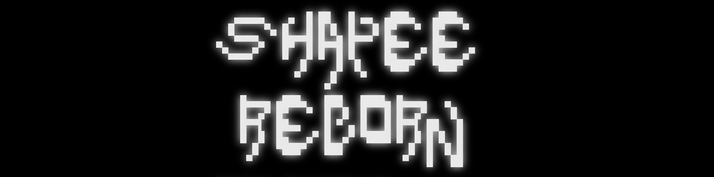
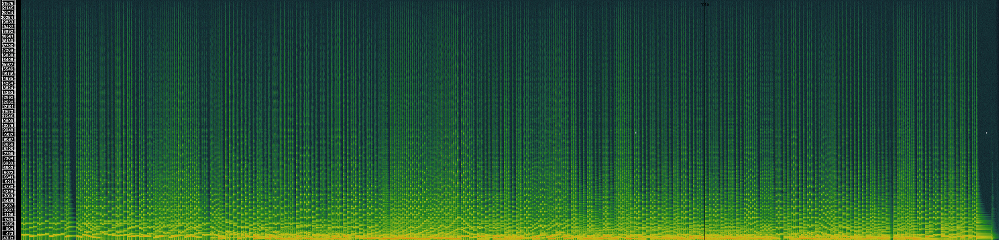

Projects
Generating Object Stamps

Since the fall of 2019, I have been working in Prof. James Tompkin's lab attempting to improve upon the task of object generation within existing images. Previous work on this project centered on the separation of mask and texture generation. This approach encouraged stronger shape inference as well as color harmonization of the generated objects within the target scene. My work on the project has mainly been focused on integrating additional guidance by the user on object shape. This includes experiments with conditioning the generative networks on pose information and depth maps, as well as training the network to produce a sum-of-gaussians representation as a prior for shape and texture generation.
Stylizing Video by Example

For the final project of the course cs2240: Interactive Graphics, my group implemented "Stylizing Video by Example" by Jamriska et al. The paper outlines a non-deep-learned approach to stylizing video frames based on style reference keyframes. This is achieved by computing a collection of guiding frames that are fed into the StyLit algorithm. Included in these guides are style frames advected based on computed optical flow, edge-filtered video frames, and an advected "positional" guide. All together, this method of video stylization is relatively efficient and artistically flexible.
To extend the paper, we also implemented automatic style keyframe generation via neural style transfer. Based on the initial style keyframe, subsequent style keyframes are generated periodically throughout the video to guide output frames. This allows for mixing the ease of neural style transfer and the temporal stability of Jamriska et al.'s method.
Shapee (reborn)
While reading Paul Lansky's lecture "The Importance of Being Digital," I was amazed by an example presented of an audio plugin named "Shapee" that could map the timbral qualities of one source audio onto the frequency components of another. Lansky demonstrated how the pitches of Brahms's lullaby, performed by an orchestra, could be shaped by the timbral components of a choir singing Perotin. The transformation resulted in a convincing approximation of Brahms's lullaby sung by a choir.
Though I could not find the actual Shapee application online, I did find Christopher Penrose's paper "Frequency Shaping of Audio Signals," which proposes the method that Shapee is based on. From this paper, I implemented my own Shapee application in Go. The transformation is much like a vocoder, using the STFT of the two audio files as well as a user-defined number of DFT filters to compute a mixture of the signals.
Orchestra performing Brahms's lullaby:
Choir performing Perotin:
Shapee (reborn)'s reproduction of Lansky's example:
Super Resolution Audio Stretch (SRAS)
The ability to time stretch audio while maintaining pitch is an important tool for sound designers, musicians, and for any situation where the timing of sound elements must be synchronized to some arbitrary guideline. The most popular algorithms used today are hand-designed to interpolate the missing pieces of the lengthened audio. The results can sometimes sound metallic or unnatural, especially when the audio is stretched substantially.
I am investigating whether a convolutional neural network could be of use in this audio manipulation problem. Audio super resolution is a related task in which a higher sample rate is achieved through deep-learned manipulation of the low-resolution signal. I intend to apply the methods of audio super resolution to the task of time stretching primarily to produce higher quality time stretching, but also as a general audio experiment that may result in interesting transformations.
This Website

Responsive and well formatted on mobile devices!